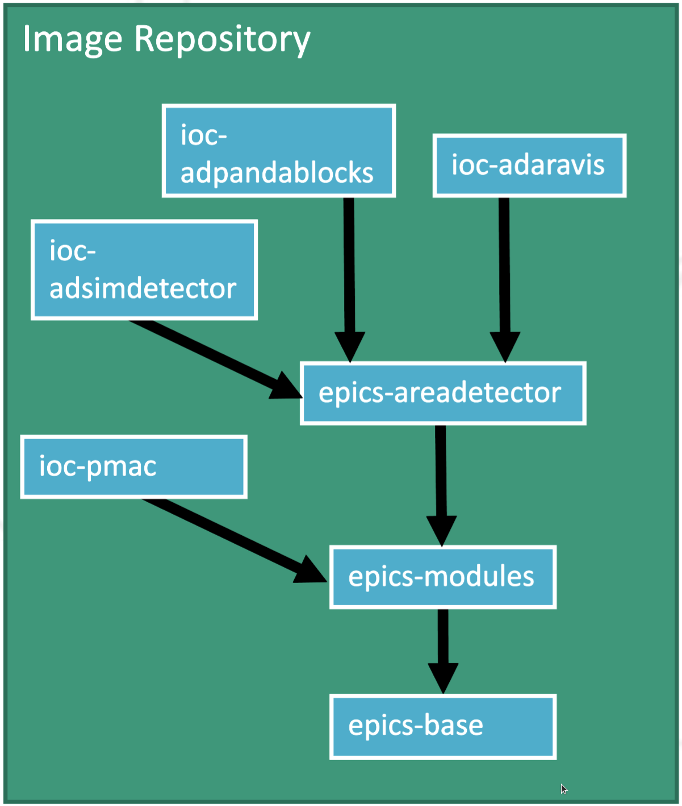

epics-containers


epics-containers is an experimental GitHub organization to try out ideas for managing EPICS IOCs in a Kubernetes cluster.
Please contribute with comments and suggestions in the wiki or issues pages:
Documentation |
|
Wiki |
https://github.com/epics-containers/epics-containers.github.io/wiki |
Issues |
https://github.com/epics-containers/epics-containers.github.io/issues |
Docs Source |
https://github.com/epics-containers/epics-containers.github.io |
Organization |
Communication
If you are interested in discussing containers for control systems, please:
Add a brief description of your project and the status of it’s use of containers to:
Email giles.knap@diamond.ac.uk to introduce yourself
We will set up a communication channel soon (after ICALEPCS 2021).
Materials
The following links are to materials presented at the ICALEPCS 2021 Meeting:
Overview
Kubernetes for EPICS IOCs applies modern industry standards to the management of IOCs.
Containers package generic IOC code and dependencies.
Kubernetes orchestrates the Containers.
Helm deploys IOCs to Kubernetes.
Repositories hold Container images and Helm charts
CI / CD generates the images, charts from source and delivers them to Repositories
Below we show how these assets combine to create a running IOC on a Kubernetes worker node.

The Helm Chart defines an IOC instance as:
An image reference for generic IOC binaries
A startup Script for the unique IOC instance
K8S resource YAML to describe resources to the Kubernetes cluster
The entire definition of the the example P45 beamline is held in this github organization:
Helm Charts and IOC Images:
BL45P IOC sources:
The Generic IOC container images are built using a hierarchy with the most common elements shared as shown in the following diagram:
{kind=link}
EPICS base and essential tools are compiled inside one image; the most commonly used support modules(primarily Asyn) and the AreaDetector framework also have their own images. Generic IOC images are then leaves in the hierarchy and are based upon the appropriate dependencies.
How the documentation is structured
Documentation is split into four categories, accessible from links in the side-bar.
Tutorials
Tutorials for setting up a test cluster, and deploying an IOC.
Explanations
Explanation of the principal ideas for deploying IOCs in Kubernetes.
How-to Guides
Practical step-by-step guides for the more experienced user.
Reference
Technical reference material.